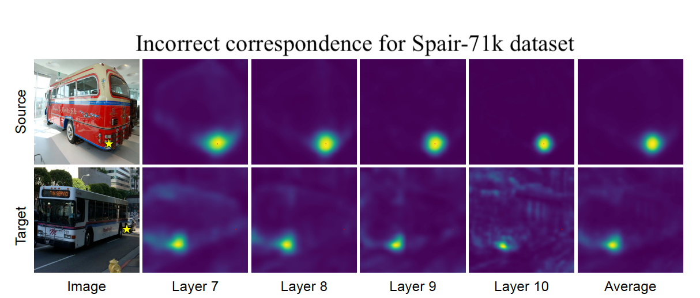
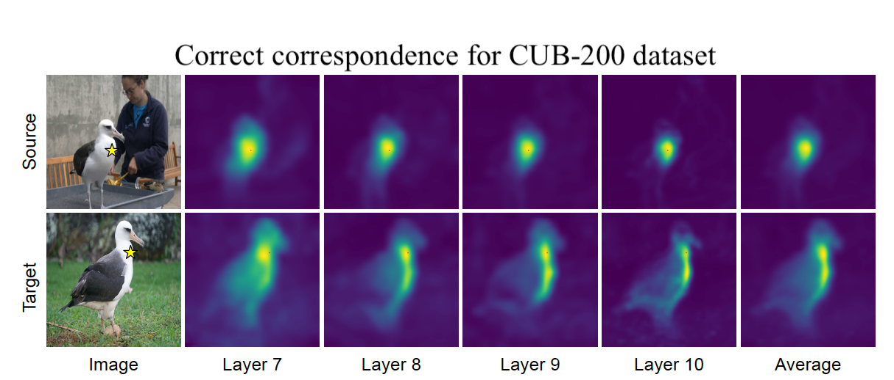
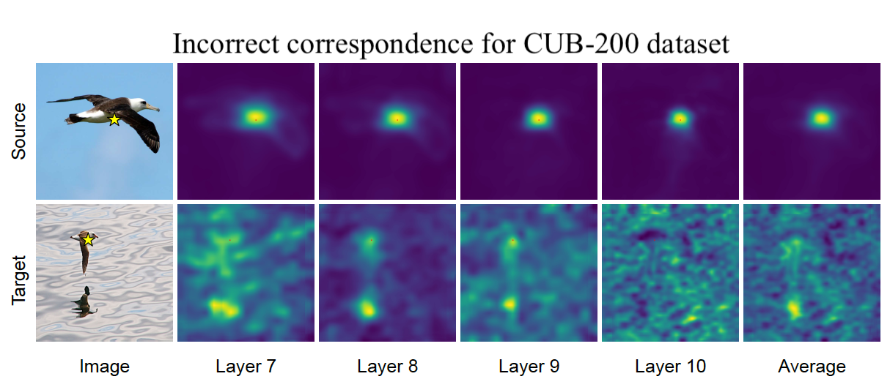
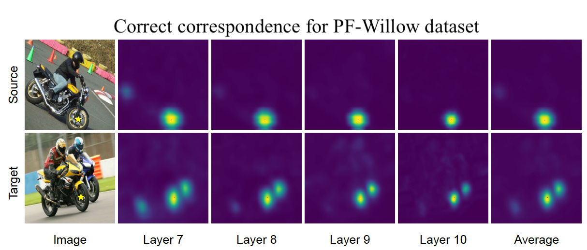
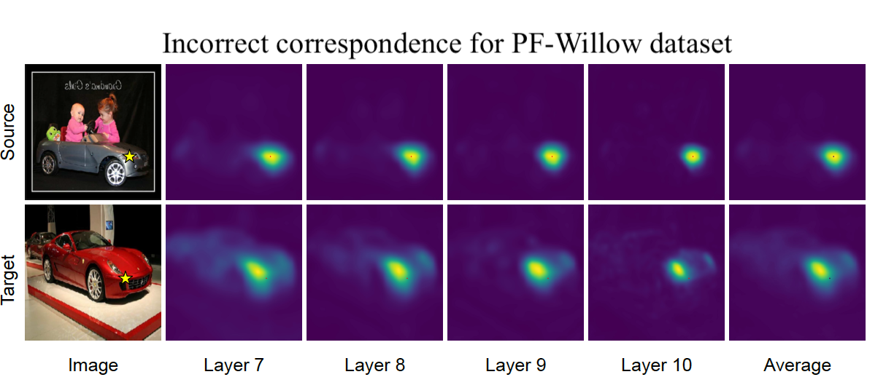

Text-to-image diffusion models are now capable of generating images that are often indistinguishable from real images. To generate such images, these models must understand the semantics of the objects they are asked to generate. In this work we show that, without any training, one can leverage this semantic knowledge within diffusion models to find semantic correspondences -- locations in multiple images that have the same semantic meaning. Specifically, given an image, we optimize the prompt embeddings of these models for maximum attention on the regions of interest. These optimized embeddings capture semantic information about the location, which can then be transferred to another image. By doing so we obtain results on par with the strongly supervised state of the art on the PF-Willow dataset and significantly outperform (20.9% relative for the SPair-71k dataset) any existing weakly or unsupervised method on PF-Willow, CUB-200 and SPair-71k datasets.
There's a lot of excellent work that was introduced around the same time as ours.
Diffusion Hyperfeatures consolidates multi-scale and multi-timestep feature maps from Stable Diffusion into per-pixel feature descriptors.
A Tale of Two Features introduces a fusion approach that capitalizes on the distinct properties of Stable Diffusion (SD) features and DINOv2.
Emergent Correspondence from Image Diffusion extracts features from Stable Diffusion at a specific timestep.
@misc{hedlin2023unsupervised,
title={Unsupervised Semantic Correspondence Using Stable Diffusion},
author={Eric Hedlin and Gopal Sharma and Shweta Mahajan and Hossam Isack and Abhishek Kar and Andrea Tagliasacchi and Kwang Moo Yi},
year={2023},
eprint={2305.15581},
archivePrefix={arXiv},
primaryClass={cs.CV}
}